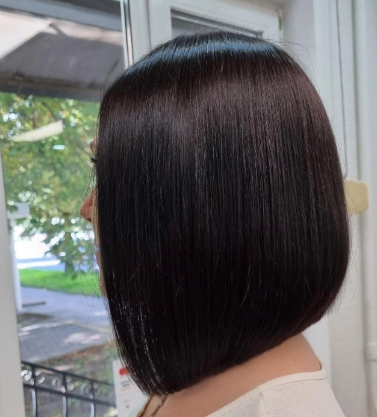
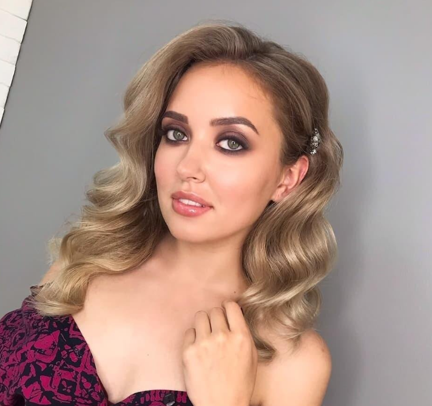
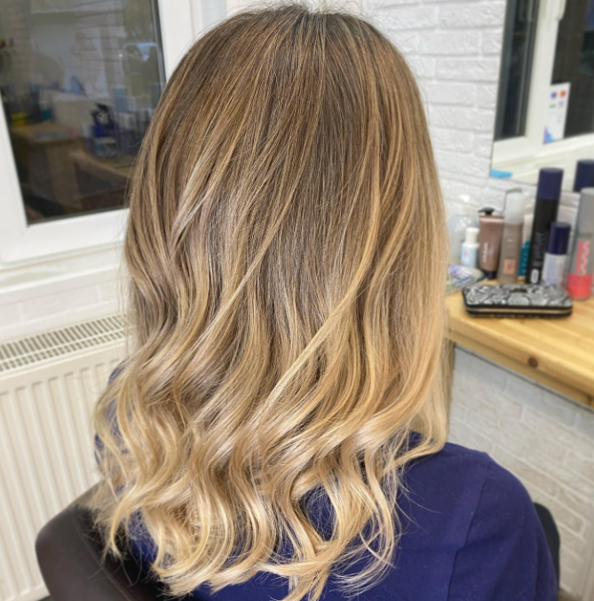
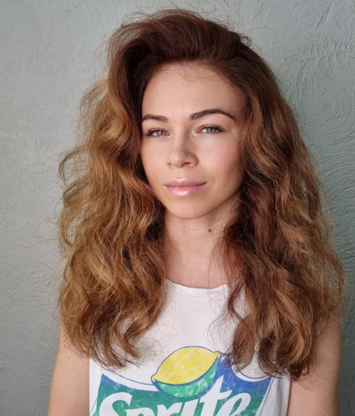
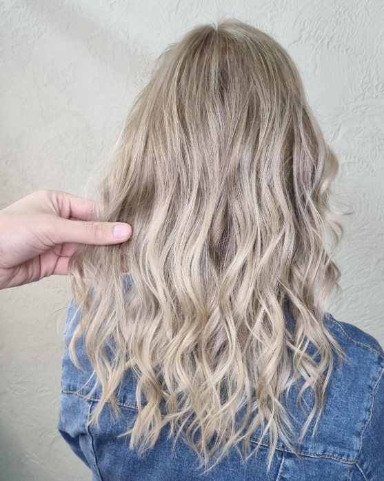
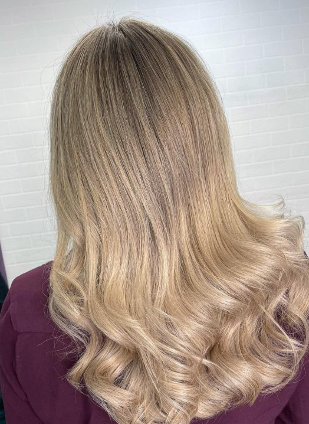
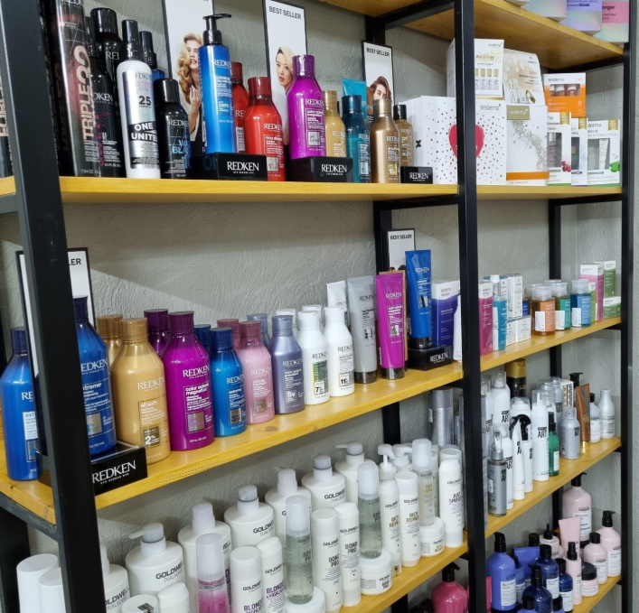

01BEAUTIQUE · КАЛИНИНГРАД
Цвет, который
хочется
рассматривать.
Лёгкая стрижка, выразительный оттенок, укладка к важному вечеру. Выбирайте образ, в котором вам хорошо.
Космонавта Леонова, 19 Калининград


Цвет. Форма. Движение.У каждого цвета — свой характерКаждая деталь имеет значение
01 / О САЛОНЕ
Красота начинается с деталей
Важен не только
новый образ.
Важно, как вы
себя чувствуете.
Иногда достаточно освежить форму. Иногда хочется совсем другого цвета. А иногда — просто выделить время для себя и выйти с красивой укладкой.
Как нас найти
BEAUTIQUE — КАЛИНИНГРАД02 / ЧТО ВЫБРАТЬ
Ваши волосы.
Ваши правила.
Новый силуэт, мягкое обновление или смелый цвет — у каждого настроения найдётся своё решение.

02
03BEAUTIQUE / ДЕТАЛИ
Не обязательно меняться.
Иногда достаточно подчеркнуть своё.
03 / ГАЛЕРЕЯ
Образы
в деталях.
Листайте, присматривайтесь к оттенкам и сохраняйте идеи для следующего визита.
Есть любимый оттенок? Сохраните фото и покажите мастеру.

ВСЁ В МЕЛОЧАХ
Хороший цвет
начинается
с внимания.
К оттенку. К длине. К тому, как волосы лежат утром и как выглядят вечером. Именно эти мелочи делают образ вашим.
BEAUTIQUE / КАЛИНИНГРАД04 / ПРИХОДИТЕ В ГОСТИ
Увидимся
в Beautique.
Мы на улице Космонавта Леонова, 19. Удобно сохранить адрес и заранее уточнить свободное время.
Контакты и запись в 2ГИСКАК НАС НАЙТИ
Леонова, 19
Калининград
ул. КосмонавтаЛеонова, 19